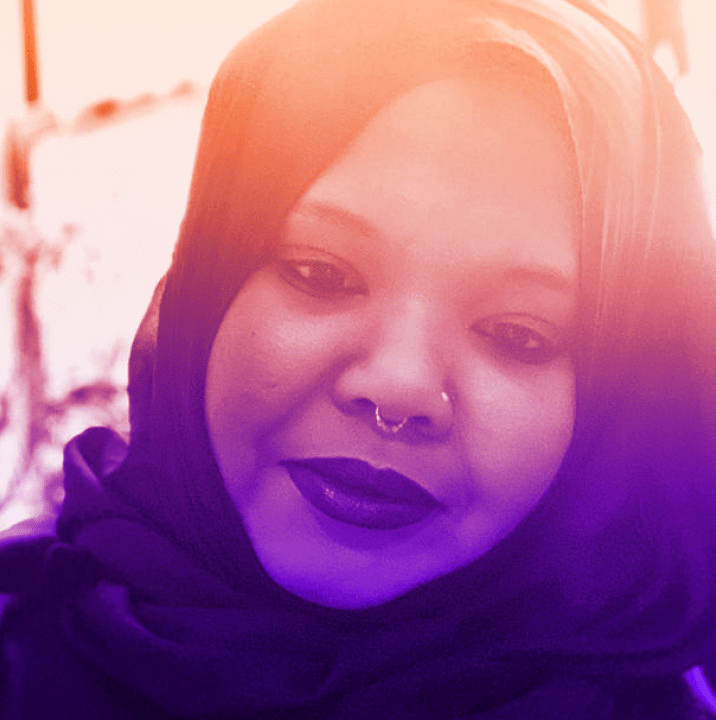
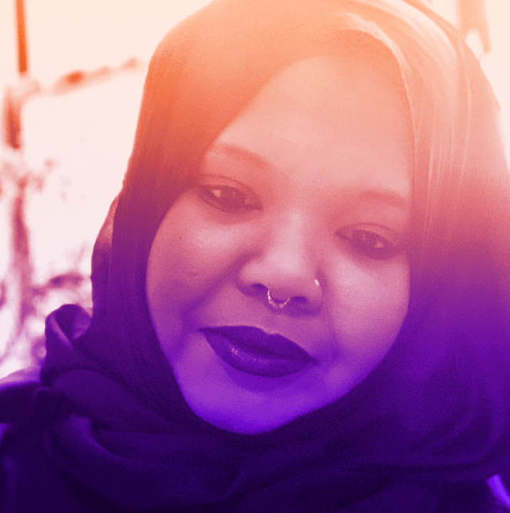

Keynote conversations
 
(Mis)Organizing Information
Shannon Mattern, The New School
Kameelah Janan Rasheed, Learner
This conversation brings together Kameelah Janan Rasheed, a learner who explores the poetics and politics of the unfinished and uncategorized through her sprawling installations, public art, publications, poems, other forms yet to be determined; and Shannon Mattern, a Professor of Anthropology at The New School, who has written books, taught classes, and worked with community groups on projects about maps, libraries, archives, media architectures and infrastructures, and urban data. We’ll address such themes as: how the designed world materializes humans’ and other species’ means of (mis)organizing information, miscommunication, and the productivity of error, ambiguity, and opacity.

On Maps
Margaret Pearce, Studio 1:1
Marty Schnure, The Wilderness Society and Maps for Good
What are the impacts we seek when we map, and how do we shape our work to make those impacts possible? What are the barriers? What is the role of collaboration, and what does good collaboration look like? These questions are our focus. We are two women cartographers in the United States. Margaret Pearce is an independent cartographer and owner of Studio 1:1. Marty Schnure leads cartography and spatial analysis at The Wilderness Society and co-founded Maps for Good. Though we belong to different generations, and work in different spheres, we both approach cartography with a strong sense of purpose and commitment. In this conversation we discuss the intentions that guide our work and explore the meaning of responsibility as it manifests in the process, form, and technique of representing spatial data.